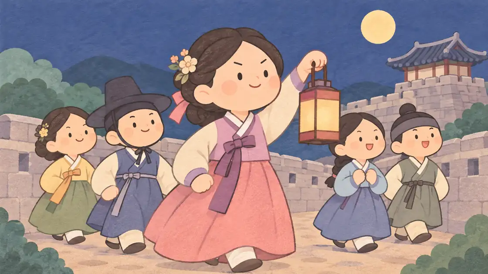
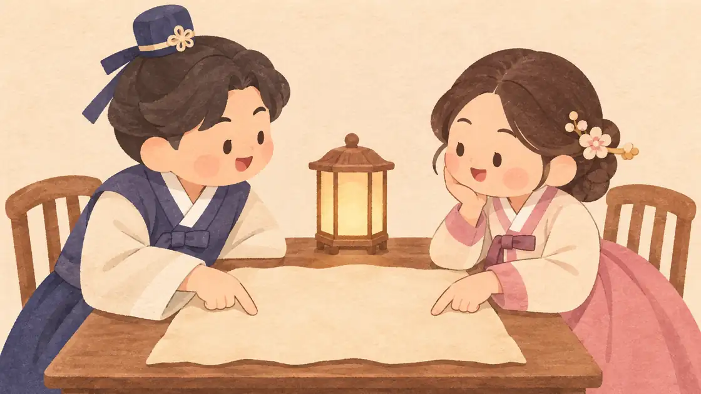

이 게시물은 쿠팡 파트너스 활동의 일환으로, 이에 따른 일정액의 수수료를 제공받습니다.


장성살 여자·남자 — 열 명 중 일곱이 가진 별, 장성살이 드는 해

동네보살 편집팀 · 2026년 10월 31일 작성
장성살은 열 명 가운데 일곱 명이 가지고 있습니다
장성살은 12신살 가운데 묶음의 기운이 가장 왕성하게 모이는 가운데 글자에 붙는 별입니다. 뜻과 찾는 법은 장성살 뜻 페이지에 자세히 정리해 두었고, 이 글은 여자와 남자 사주에서 장성살을 어떻게 읽는지에 집중합니다.
먼저 숫자부터 보겠습니다. 동네보살이 1950~2009년의 모든 날짜에 열두 시진을 넣어 만든 사주 262,980개를 세어 보니, 장성살이 있는 사주는 67.5%였습니다. 태어난 시각을 모르는 여섯 글자로 보아도 62.0%입니다. 열 명 가운데 예닐곱이 가진 별이라, 장성살이 있다는 것만으로 특별한 팔자라고 볼 수는 없습니다.
쥐·말·토끼·닭띠는 띠만으로 장성살이 붙습니다
장성살이 이렇게 흔한 까닭은 장성살 글자가 묶음의 가운데 글자, 곧 자·오·묘·유이기 때문입니다. 쥐띠(자)는 신자진 묶음의 가운데, 말띠(오)는 인오술의 가운데, 토끼띠(묘)는 해묘미의 가운데, 닭띠(유)는 사유축의 가운데 글자입니다. 그래서 이 네 띠는 태어난 해의 땅 글자 자체가 장성살 자리가 됩니다.
동네보살은 태어난 해와 태어난 날의 땅 글자를 모두 기준으로 보기 때문에, 날의 땅 글자가 자·오·묘·유인 사람도 같은 이유로 장성살이 붙습니다. 실제로 장성살이 있는 사람 가운데 82.3%는 이렇게 띠나 일지 자체에서 장성살이 나온 경우였습니다.
이런 장성살은 따로 떨어진 글자에서 온 것이 아니라 나를 이루는 기둥에 처음부터 박혀 있는 것이라, 성향으로 굳어 있다고 읽는 편이 자연스럽습니다.
장성살 여자, '기가 세다'는 말의 진짜 뜻
장성살 여자라는 검색어 옆에는 흔히 '기가 세다', '남편을 누른다'는 말이 따라붙습니다. 이것은 집안의 결정은 남자가 하는 것이 당연했던 시절의 풀이입니다. 앞에서 이끄는 별이 여자 사주에 있으니 자리다툼이 난다고 본 것입니다.
지금 기준으로 읽으면 장성살 여자는 책임을 미루지 않는 사람입니다. 모임에서 아무도 정하지 않을 때 먼저 날짜를 잡고, 일이 어그러지면 남 탓보다 수습을 먼저 하는 편입니다. 회사에서는 팀장이나 실무 책임자를 맡았을 때 오히려 마음이 편해지는 경우가 많습니다.
집에서는 살림과 돈 계획, 아이 교육처럼 굵직한 일을 맡아 끌고 가는 모습으로 드러나기 쉽습니다. 그러니 기가 센 사람이라기보다 정할 줄 아는 사람이라고 읽는 편이 맞습니다.

장성살 여자의 연애와 결혼
연애에서 장성살 여자는 끌려가는 관계를 오래 견디지 못합니다. 약속 장소, 여행 일정, 다툰 뒤 화해하는 방식까지 자기 의견이 분명해서, 자기 생각이 없는 상대에게는 금방 흥미를 잃기도 합니다.
잘 맞는 짝은 장성살 여자의 결정을 존중하면서 자기 의견도 편하게 꺼내는 사람입니다. 둘 다 자기 주장이 강하면 부딪히는 일이 늘 수 있는데, 이때는 집안일과 돈 관리처럼 맡는 영역을 나눠 두면 서로의 장성 기운이 다투지 않고 각자 자리에서 빛납니다.
결혼은 자리를 잡은 뒤에 하려는 경향이 있습니다. 내 일과 생활의 중심이 먼저 서야 함께 사는 그림이 그려지는 편이라, 주변의 시계에 맞추기보다 스스로 준비됐다고 느낄 때 결정하는 것이 장성살 여자에게 맞는 순서입니다.
장성살 남자, 혼자 짊어지는 짐을 나누기
장성살 남자는 어릴 때부터 반장이나 주장 같은 자리를 자주 맡는 편입니다. 사람을 모으고 방향을 정하는 데 익숙해서 조직에서도 일찍 중간 관리자 자리에 오르는 경우가 많습니다.
다만 장성살 남자는 가장이라는 말을 무겁게 받아들여 힘든 일을 혼자 안고 가려는 버릇이 있습니다. 집안의 돈 걱정이나 회사의 갈등을 말하지 않고 버티다 보면 가까운 사람은 그 사정을 모른 채 거리감을 느낍니다.
장성살의 리더십은 혼자 결정하는 데보다 함께 정한 일을 끝까지 책임지는 데서 더 크게 빛납니다. 중요한 결정 하나만이라도 배우자나 동료와 먼저 상의하는 습관을 들이면, 따르는 사람이 많은 장성살로 자리 잡습니다.

장성살이 드는 해
장성살 글자는 해마다 바뀌는 그해의 땅 글자에도 옵니다. 내 띠 묶음의 장성살 글자를 가진 해가 오면, 그해에 책임과 자리가 커지는 흐름으로 읽는 풀이가 있습니다.
호랑이·말·개띠(인오술)는 오(午)년, 곧 올해 2026년 병오년이 장성살의 해입니다. 뱀·닭·소띠(사유축)는 유(酉)년인 2029년 기유년, 원숭이·쥐·용띠(신자진)는 자(子)년인 2032년 임자년, 돼지·토끼·양띠(해묘미)는 묘(卯)년인 2035년 을묘년이 장성살의 해입니다. 12년마다 한 번씩 돌아옵니다.
이런 해에는 맡겠다고 손을 드는 일이 결과로 이어지기 쉽다고 봅니다. 다만 한 해의 흐름은 띠 하나보다 내 사주 전체와 함께 읽어야 정확합니다. 2027년 한 해 흐름이 궁금하시면 2027 신년운세와 년생별 운세를 함께 보세요.
둘 다 장성살이라면, 궁합에서 읽는 법
장성살이 열 명 가운데 일곱에게 있는 만큼, 연인이나 부부가 둘 다 장성살을 가진 경우도 흔합니다. 이런 짝은 둘 다 정하고 이끄는 데 익숙해서, 작은 일에서도 누가 결정할지를 두고 부딪히기 쉽다고 봅니다.
이때 도움이 되는 것은 결정의 영역을 미리 나누는 일입니다. 여행은 한 사람이, 집안 돈 계획은 다른 사람이 맡는 식으로 나누면 두 장성살이 서로 다투지 않고 각자의 자리에서 힘을 냅니다. 큰 결정은 하루 묵힌 뒤 함께 정한다는 규칙 하나만 있어도 다툼이 크게 줄어듭니다.
두 사람의 띠와 사주가 얼마나 잘 맞는지는 사주 궁합에서 함께 볼 수 있습니다.
장성살을 잘 쓰는 작은 습관
장성살은 이름에 살이 붙었을 뿐 대표적으로 좋게 읽는 별입니다. 한국갤럽이 2026년 3월 만 19세 이상 1,507명에게 물었을 때 점이나 사주를 믿는다는 응답은 40%였습니다. 믿는 쪽이든 아니든 신살은 나를 돌아보는 말로 쓸 때 가장 쓸모가 있습니다. 힘이 한쪽으로 쏠리면 고집으로 보이기 쉬우니, 결정하기 전에 한 바퀴 의견을 듣는 습관 하나만 챙겨도 충분합니다.
작은 모임의 총무나 대표처럼 부담이 적은 자리부터 맡아 보는 것도 좋습니다. 이끄는 경험이 쌓일수록 장성살은 남을 누르는 힘이 아니라 남을 편하게 하는 힘으로 자랍니다.
내 사주 어느 기둥에 장성살이 있는지는 장성살 계산 칸에서, 12신살 열두 개를 한 번에 보려면 12신살 모음에서 확인해 보세요.
띠 묶음별 장성살 글자와 장성살이 드는 해
태어난 해(띠)나 태어난 날의 땅 글자가 속한 묶음으로 봅니다. 해의 간지는 동네보살 만세력 기준입니다
1950~2009년생 사주 262,980개로 센 장성살
날마다 열두 시진을 모두 넣어 셌습니다
참고한 자료
사주 — 일간 중심으로 십이신살·길성 등을 종합해 판단 — 한국민족문화대백과사전(한국학중앙연구원)
간지(干支) — 천간과 지지, 육십갑자 — 한국민족문화대백과사전(한국학중앙연구원)
점(占)·사주(四柱) 믿으십니까? 1991-2026 — 한국갤럽 갤럽리포트
자주 묻는 질문
장성살 여자는 기가 센가요?
옛 풀이에서 나온 말입니다. 요즘은 책임을 미루지 않고 먼저 정하는 사람으로 읽습니다. 장성살은 1950~2009년생 사주의 67.5%에 있을 만큼 흔한 별이라 장성살 하나로 성격을 단정하지는 않습니다.
쥐띠는 모두 장성살이 있나요?
동네보살처럼 태어난 해를 기준으로 보면 그렇습니다. 쥐띠의 자는 신자진 묶음의 가운데 글자라 띠 자체가 장성살 자리입니다. 말·토끼·닭띠도 같은 이유로 장성살이 붙습니다.
장성살이 드는 해는 언제인가요?
인오술(호랑이·말·개띠)은 2026년 병오년, 사유축(뱀·닭·소띠)은 2029년 기유년, 신자진(원숭이·쥐·용띠)은 2032년 임자년, 해묘미(돼지·토끼·양띠)는 2035년 을묘년이 장성살의 해입니다.
장성살과 반안살이 함께 있으면 어떤가요?
반안살은 장성살 바로 다음 글자라 함께 있는 경우가 많습니다. 함께 있으면 앞에서 이끄는 힘과 얻은 자리를 지키는 힘을 함께 갖춘 짜임으로 읽습니다. 반안살 쪽 이야기는 반안살 여자·남자 칼럼에 따로 정리했습니다.